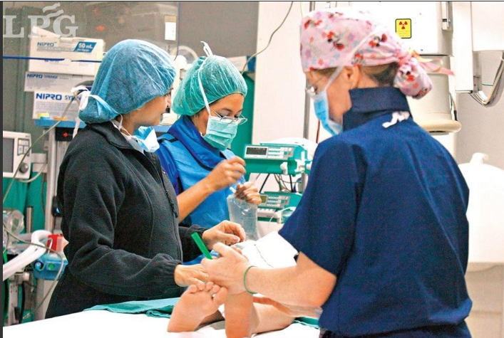

Los técnicos en esta área manejan equipos relacionados con estudios electrofisiológicos como la electromiografía, electroencefalograma, polisomnografía y potenciales evocados.
Los estudios electrofisiológicos (EEF) emplean técnicas de cateterización cardíaca para estudiar a aquellos pacientes que sufren de irregularidades en los latidos del corazón (lo que se denomina «arritmia»). Los EEF muestran cómo el corazón reacciona a señales eléctricas controladas. Estas señales permiten determinar en qué lugar del corazón se origina la arritmia y qué medicamentos podrían ser eficaces para eliminar el problema. Los EEF también permiten determinar qué otras técnicas de cateterización podrían utilizarse para eliminar la arritmia.
Los EEF emplean señales eléctricas para averiguar qué tipo de arritmia tiene el paciente y qué puede hacerse para prevenirla o controlarla. Los médicos realizan un procedimiento de cateterización cardíaca en el cual un tubo largo y delgado (denominado «catéter») se introduce en una arteria de la pierna hasta llegar al corazón. Este catéter puede utilizarse para enviar señales eléctricas al corazón. La estimulación del corazón provoca una arritmia y los médicos pueden registrar en qué lugar del corazón se origina. En algunos casos, puede administrarse un medicamento para provocar una arritmia. También pueden administrarse ciertos medicamentos a través del catéter para determinar cuáles logran eliminar la arritmia.